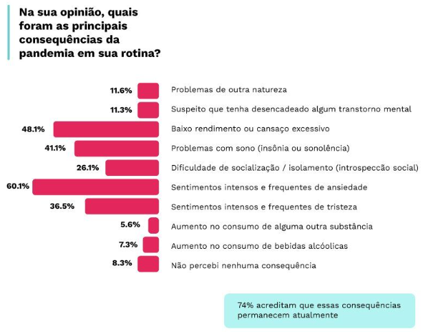
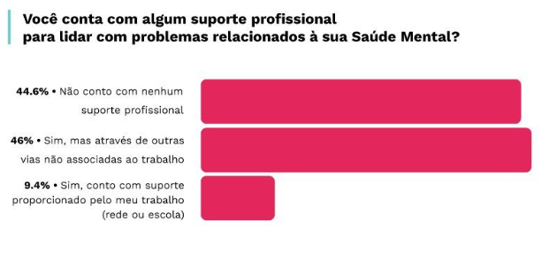
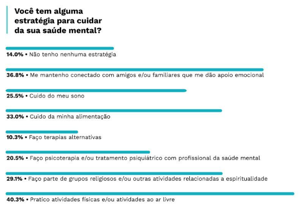

Estudos apontam a queda da saúde mental dos docentes
Mais de 20% dos educadores brasileiros consideram sua saúde mental ruim ou muito ruim, indica a pesquisa “Saúde Mental dos Educadores 2022”, que ouviu mais de 5.000 profissionais da educação, entre professores e gestores de todos os Estados e do Distrito Federal.
Os educadores apontaram sentimentos frequentes de ansiedade (60,1%); baixo rendimento e cansaço excessivo (48,1%); e problemas com o sono (41,1%). Dificuldade de socialização e isolamento, sensação de tristeza e aumento do consumo de psicoativos e álcool também foram relatados.
Por Alexandre Filho e Cauê
14/10/2023
Olhando apenas superficialmente para à sociedade, nota-se que tudo está de volta ao normal, porém quando se há um olhar mais detalhado e voltado aos indivíduos,percebe-se que muitas questões ainda estão vivas em cada um. Isso fica ainda mais evidente quando volta-se o olhar para os professores, profissão que sofreu em excesso na pandemia e nos anos decorrentes.
Ainda mais exemplificado pela pesquisa Saúde Mental dos Educadores 2022, realizada pela NOVA ESCOLA em parceria com o Instituto Ame Sua Mente, analisando os efeitos da pandemia na saúde mental dos docentes. Contando com a participação de mais de 5 mil profissionais entre professores e gestores de todos os estados do país e do Distrito Federal, sendo 84,6% deles oriundos da rede pública, o levantamento transparece que o número de educadores que consideram sua saúde mental "muito ruim" ou "ruim" aumentou em relação ao ano passado: de 13,7% para 21,5%, um aumento de 7,8%. Enquanto que em 2020, esse indicador havia estado em 30,1%.
Síndrome de Burnout
Um termo que passou a ser corriqueiro no vocabulário da pandemia foi a Síndrome de Burnout. Incluída em 2022 no Código Internacional de Doenças (Cid-11), a síndrome tem como principais características a falta de energia e entusiasmo e o sentimento de forte esgotamento relacionado ao trabalho. “Também nota-se baixa realização pessoal, autoavaliação negativa e um excesso de despersonalização, ou seja, tratar o outro de uma forma fria justamente como forma de se proteger”, explica Naiana Dapieve Patias, docente da UFSM.
Falta de energia, entusiasmo, forte esgotamento em relação ao trabalho, autoestima baixa envolvendo realizações, tratando os próximos de forma fria para se defender
O contexto pré-pandemia, marcado pelo esgotamento emocional, a falta de infraestrutura e os baixos salários, já facilitaria o surgimento da Síndrome de Burnout entre os professores. Porém a instauração de toda a crise causada pelo covid-19 potencializou esses problemas e acrescentou novos, resultando no aumento do número de casos envolvendo essa profissão. “Muitos passaram por situações estressoras crônicas, não tiveram ferramentas pessoais e institucionais para superar [isso] e acabaram se afastando do trabalho”, relata Naiana.
Consequências da Pandemia
Sendo ainda mais agravada pela pandemia global, houveram-se questionamentos acerca das mudanças que este problema sanitário causou no dia-a-dia dos professores, onde (60,1%) declaram possuir sentimentos intensos e frequentes de ansiedade, (48,1%) relataram baixo rendimento ou cansaço excessivo, (41,1%) sentiram problemas com sono, como insônia ou sonolência, entre muitos outras consequências sentidas

Suporte Profissional
Isso mostra que, além de serem extremamente afetados pelo isolamento social que ocorreu, muitos não conseguiram continuar normalmente com suas vidas, por não possuírem ajuda nem suporte, para que fossem menos afetados com todo este acontecimento. Aonde, ainda com toda a circunstância que ocorria no mundo, precisavam dar aulas, muitas vezes estressantes, sem apoio nenhum das escolas, isolados de seus parentes, amigos, enfrentando sozinhos e ainda lidando com alunos, em que muitos não queriam aprender, ou tinham dificuldades para entrar nas aulas, ouvir os professores, tudo isso sem nenhum suporte

Houve aumento significativo, entre 2021 e 2022, da proporção de educadores que referiu ter algum tipo de apoio advindo da própria escola ou de fora dela. Há, no entanto, prevalência significativamente maior de educadores do ensino privado que referiram ter algum tipo de apoio para lidar com a própria saúde mental em relação ao ensino público.
Como Lidar?
Para lidar com tanta pressão, são diversas as maneiras encontradas, mas duas respostas se destacam: fazer atividade física ou ao ar livre (40,4%) e manter-se conectado com amigos e familiares que oferecem apoio emocional (36,8%). São mencionados ainda cuidar do sono e da alimentação, buscar terapias alternativas e bucar apoio em grupos religiosos ou espirituais e tratamento com profissionais de saúde.

Uma nova Realidade
Na opinião de Maria Aparecida Jardim Carvalho, 58 anos, que está há seis anos no magistério da rede municipal de Lorena, também interior de São Paulo, o período trouxe inúmeras transformações.
“Sou uma pessoa afetuosa, gosto de estar próxima dos alunos, e não poder fazer isso mexeu comigo. Com a volta à escola, me surpreendi com os alunos, que falavam da máscara, do álcool gel e da própria doença. Todo mundo amadureceu. Aliás, eu acho que dar aulas é mais do que ensinar, é aprender sempre, e na pandemia isso ficou muito claro”, diz a educadora.
Para ela, o contexto da pandemia deixou impactos que vão levar tempo para serem superados e que, para isso, é necessário mais professores, mediadores e estrutura – inclusive no que diz respeito à saúde emocional da comunidade escolar. “Todas as pessoas do meu grupo tomam algum ansiolítico. Eu passei a tomar para aguentar a carga toda porque o que vivemos reflete dentro de casa, no nosso comportamento social, com marido, filhos. Converso com os colegas, e a maioria não vê a hora de se aposentar, de chegar o final de semana”, lamenta
A Necessidade da Escuta
Para Naiana Dapieve Patias, docente do Departamento de Psicologia da Universidade Federal de Santa Maria (UFSM) e coordenadora do Núcleo de Estudos em Contextos de Desenvolvimento Humano: Família e Escola (Nedefe), algo que faltou durante a pandemia precisa mudar: ouvir os professores. “Existia uma preocupação muito grande com ouvir pais e alunos. Mas e os professores? Nos inúmeros decretos sobre a volta às aulas nos modelos híbrido e presencial, os professores não foram ouvidos como deveriam”, diz.
Buscando reverter esse quadro, desde 2020, um projeto de extensão da UFSM intitulado Trabalho e Saúde Mental dos Professores Durante e Após a Pandemia da Covid realiza ações interventivas nas escolas com foco na promoção da saúde mental dos professores tendo em vista o impacto que a pandemia gerou no trabalho docente. Essa iniciativa integra o Nedefe desde a realização do trabalho de mestrado de Elenise Abreu Coelho, chamado Características do Teletrabalho e Síndrome de Burnout da Educação Básica Durante a Pandemia no Rio Grande do Sul.
A docente relata que, apesar de vários profissionais comentarem sobre as capacitações e os espaços de formação dos quais estavam participando, sempre voltados às tecnologias digitais e ao aprendizado de ferramentas para utilização em sala de aula, não havia espaço para falarem sobre o que se passava com eles em decorrência da pandemia. “Sentimos necessidade de contribuir com esses profissionais que estavam respondendo à nossa pesquisa. Alguns professores vinham nos procurar falando da necessidade de espaços para eles conversarem, onde pudessem falar sobre as dificuldades pelas quais estavam passando”, conta Naiana.
Assim, rodas de conversa passaram a ser organizadas ao longo destes últimos anos, principalmente em escolas públicas. “Percebemos questões que historicamente já são da profissão, como falta de reconhecimento e excesso de trabalho. Durante a pandemia, outras queixas surgiram, como a necessidade de conexão ininterrupta em grupos de WhatsApp que exigiam atenção durante finais de semana, na parte da noite e em feriados, o teletrabalho compulsório. Ou seja, o trabalho entrou no espaço doméstico de uma forma muito impactante”, avalia a pesquisadora.
A coordenadora do Nedefe comenta ainda que as rodas de conversas evidenciaram um aumento das crises de ansiedade, do mau humor, da baixa qualidade do sono, do aumento da jornada de trabalho e dos sintomas de estresse. “É importante situar que os professores já eram uma classe muito acometida por problemas de saúde mental, e isso vem mais forte com a pandemia.”
Valorização e Empatia
Elenise Abreu Coelho, que é mestre em Psicologia pela UFSM, cujo trabalho de dissertação deu origem ao projeto de extensão do Nedefe, aponta os desafios que a Educação precisará enfrentar a partir de agora.
“As estratégias não podem estar apenas focadas na aprendizagem; elas têm de incluir o professor, que precisa conversar, falar dos seus sentimentos. Temos ainda a Lei nº 13.935, que prevê que as redes públicas de Educação Básica contarão com serviços de Psicologia e Serviço Social. Isso é importante pois dará suporte aos alunos, pais e professores”, diz.
Outro ponto fundamental na visão de Elenise é o fortalecimento do papel do professor e sua valorização. “Todos nós precisamos nos conscientizar da necessidade desse profissional para toda a sociedade”, finaliza.